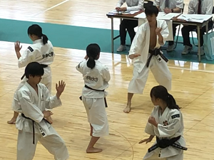
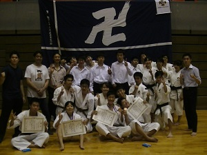
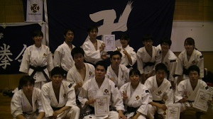
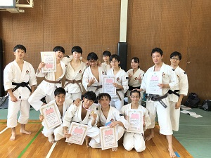
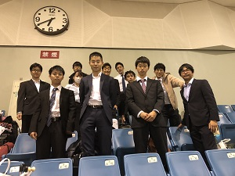
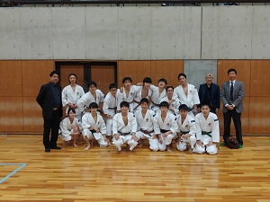
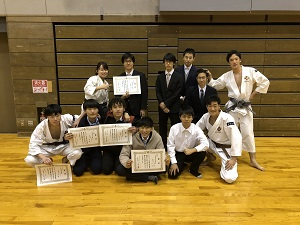

京都大学体育会少林寺拳法部
写真
大会（2019年度）
京都府大会
団演の一コマです。2019年度初めての大会でした。この大会では大学生のコートは武階でわかれておらず、色々な演武が間近で見られて刺激的でした！
関西学生大会
運用法団体戦では2位の快挙でした。演武でも入賞者が出ました。各々の課題を持ち帰り、意気を新たにしました。前期の折り返しの時期です。
七大学総合体育大会
今年の七帝戦は九州大学で開催されました。演武では多くのペアが本戦に出場、運用法の部では京都大学が一位でした。運用法の部は今回を含めて三連覇です！
山城ブロック交流大会
今期初の大会であり、1回生にはデビュー戦となりました。成果と課題を次に活かせるよう頑張っていきたいと思います。
全日本学生大会
11/4に千葉県にて全日本学生大会が行われました。運用法で入賞者がでたものの、組演武では全ペア予選を通過できず悔しい思いをしました。ここで得られた刺激を次に活かしたいと思います。
京都学生大会
同志社大学にて京都学生大会が行われました。次の関西学生新人大会に向けて、引き続き練習を頑張っていきたいと思います。
関西学生新人大会
この大会をもって後期すべての大会が終了いたしました。ご指導くださった皆様、並びに応援してくださった全ての方々に感謝申し上げます。